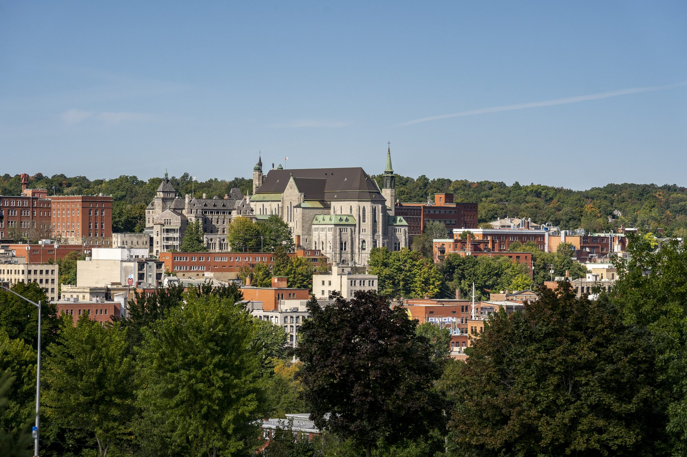

TQC 2026
August 31–September 4, 2026
Welcome to Sherbrooke, Québec, Canada!
Call For Papers Registration is now open!What is TQC 2026?
The Theory of Quantum Computation, Communication and Cryptography (TQC) is a leading annual international conference for students and researchers working in the theoretical aspects of quantum information science. The scientific objective is to bring together the theoretical quantum information science community to present and discuss the latest advances in the field.
See the list of previous conferences here.
Key Dates TQC 2026
(all times 23:59 AoE)
| Date | Event |
|---|---|
| February 1st, 2026 | Talk submission deadline |
| March 1st, 2026 | Early poster notification deadline* |
| April 2nd, 2026 | Talk notification to authors |
| April 20th, 2026 | Poster-only submission deadline |
| May 1st 2026 | Poster-only acceptance notification to authors |
| Until June 28, 2026 | Early bird registration |
| June 29 – | On-time bird registration – Extended! |
| Mon, August 31 – Fri, September 4 | TQC 2026 |
*The intention of the early poster notification is to facilitate logistics related to registration and travel authorizations. Submissions accepted at this stage will continue through the talk selection process.
Featured Speakers
- /2026/sessions/invited_greg_meyer
MITGreg MeyerInvited Speaker: Greg Meyer — "Discrete log, factoring, and proofs of quantumness in 2026"
- /2026/sessions/invited_omri_shmueli
CIS Lab, NTT ResearchOmri ShmueliInvited Speaker: Omri Shmueli — "Quantum Cryptography without Secret Keys"
- /2026/sessions/invited_sevag_gharibian
Paderborn UniversitySevag GharibianInvited Speaker: Sevag Gharibian — "Unentangled quantum proofs"
- /2026/sessions/invited_uma_girish
University of TorontoUma GirishInvited Speaker: Uma Girish — "The Story of Forrelation"
Sponsors
Other Sponsors
2026 TQC Logo
Our logo was created by local artist Christine Sioui Wawanoloath. Inspired by quantum concepts, vibrant colors, and cultural tradition, Christine incorporated the bear as a meaningful symbol in her design. Discover more of her artwork here.